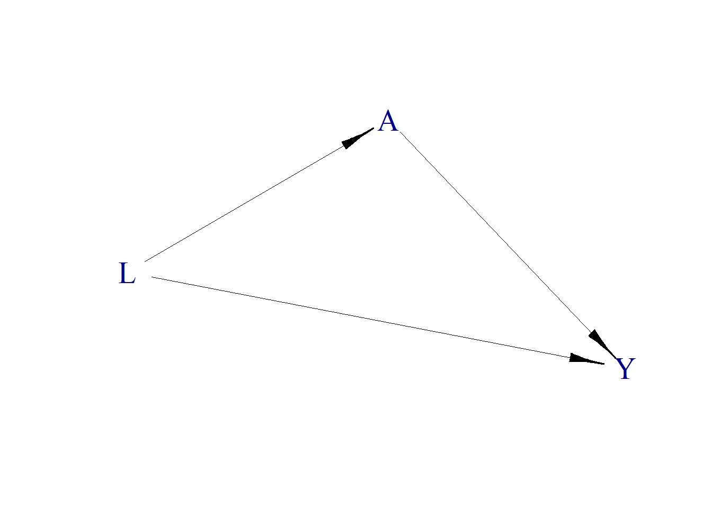
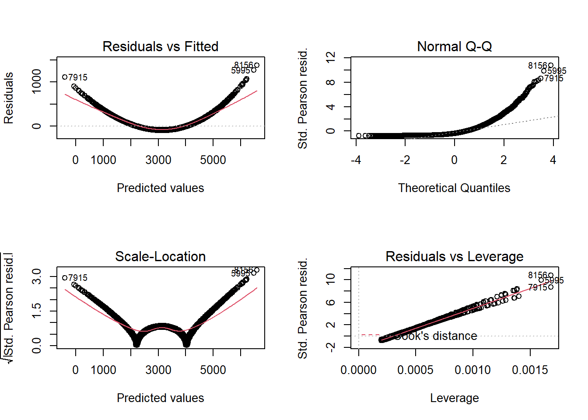

Chapter 8 PS vs. Regression
8.1 Data Simulation
Simplified simulation example, so that we know the true parameter \(\theta\).
| \(Y\) : Outcome | Cholesterol levels (continuous) |
| \(A\) : Exposure | Diabetes |
| \(L\) : Known Confounders | age (continuous) |
- Confounder \(L\) (continuous)
- Logit \(L\) ~ N(mean = 10, sd = 1)
- Treatment \(A\) (binary 0/1)
- Logit \(P(A = 1)\) ~ 0.4 L
- Outcome \(Y\) (continuous)
- Y ~ N(mean = 3 L + \(\theta\) A, sd = 1)
\(\theta = 0.7\)
require(simcausal)
D <- DAG.empty()
D <- D +
node("L", distr = "rnorm", mean = 10, sd = 1) +
node("A", distr = "rbern", prob = plogis(0.4*L)) +
node("Y", distr = "rnorm", mean = 3 * L + 0.7 * A, sd = 1)
Dset <- set.DAG(D)plotDAG(Dset, xjitter = 0.1, yjitter = .9,
edge_attrs = list(width = 0.5, arrow.width = 0.4, arrow.size = 1.7),
vertex_attrs = list(size = 18, label.cex = 1.8))## using the following vertex attributes:## 181.8NAdarkbluenone0## using the following edge attributes:## 0.50.41.7black1
# Data generating function
fnc <- function(n = 10, seedx = 123){
require(simcausal)
set.seed(seedx)
D <- DAG.empty()
D <- D +
node("L", distr = "rnorm", mean = 10, sd = 1) +
node("A", distr = "rbern", prob = plogis(0.4*L)) +
node("Y", distr = "rnorm", mean = 3 * L + 0.7 * A, sd = 1)
Dset <- set.DAG(D)
A1 <- node("A", distr = "rbern", prob = 1)
Dset <- Dset + action("A1", nodes = A1)
A0 <- node("A", distr = "rbern", prob = 0)
Dset <- Dset + action("A0", nodes = A0)
Cdat <- sim(DAG = Dset, actions = c("A1", "A0"), n = n, rndseed = 123)
generated.data <- round(cbind(Cdat$A1[c("ID", "L", "Y")],Cdat$A0[c("Y")]),2)
names(generated.data) <- c("ID", "L", "Y1", "Y0")
generated.data <- generated.data[order(generated.data$L, generated.data$ID),]
generated.data$A <- sample(c(0,1),n, replace = TRUE)
generated.data$Y <- ifelse(generated.data$A==0, generated.data$Y0, generated.data$Y1)
counterfactual.dataset<- generated.data[order(generated.data$ID) , ][c("ID","L","A","Y1","Y0")]
observed.dataset<- generated.data[order(generated.data$ID) , ][c("ID","L","A","Y")]
return(list(counterfactual=counterfactual.dataset,
observed=observed.dataset))
}10 observations from the data generation:
result.data <- fnc(n=10) result.data## $counterfactual
## ID L A Y1 Y0
## 1 1 9.44 1 30.24 29.54
## 2 2 9.77 1 30.37 29.67
## 3 3 11.56 1 35.78 35.08
## 4 4 10.07 0 31.02 30.32
## 5 5 10.13 0 30.53 29.83
## 6 6 11.72 1 37.63 36.93
## 7 7 10.46 0 32.58 31.88
## 8 8 8.73 1 24.94 24.24
## 9 9 9.31 1 29.34 28.64
## 10 10 9.55 1 28.89 28.19
##
## $observed
## ID L A Y
## 1 1 9.44 1 30.24
## 2 2 9.77 1 30.37
## 3 3 11.56 1 35.78
## 4 4 10.07 0 30.32
## 5 5 10.13 0 29.83
## 6 6 11.72 1 37.63
## 7 7 10.46 0 31.88
## 8 8 8.73 1 24.94
## 9 9 9.31 1 29.34
## 10 10 9.55 1 28.898.2 Treatment effect from counterfactuals
True \(\theta\) can be obtained from counterfactual data:
result.data$counterfactual$TE <- result.data$counterfactual$Y1- result.data$counterfactual$Y0
result.data$counterfactual## ID L A Y1 Y0 TE
## 1 1 9.44 1 30.24 29.54 0.7
## 2 2 9.77 1 30.37 29.67 0.7
## 3 3 11.56 1 35.78 35.08 0.7
## 4 4 10.07 0 31.02 30.32 0.7
## 5 5 10.13 0 30.53 29.83 0.7
## 6 6 11.72 1 37.63 36.93 0.7
## 7 7 10.46 0 32.58 31.88 0.7
## 8 8 8.73 1 24.94 24.24 0.7
## 9 9 9.31 1 29.34 28.64 0.7
## 10 10 9.55 1 28.89 28.19 0.78.3 Treatment effect from Regression
What happens in observed data for a sample of size 10?
round(coef(glm(Y ~ A, family="gaussian", data=result.data$observed)),2)## (Intercept) A
## 30.68 0.35round(coef(glm(Y ~ A + L, family="gaussian", data=result.data$observed)),2)## (Intercept) A L
## -6.55 1.11 3.64What happens in observed data for a sample of size 10000?
result.data <- fnc(n=10000)round(coef(glm(Y ~ A, family="gaussian", data=result.data$observed)),2)## (Intercept) A
## 30.00 0.67round(coef(glm(Y ~ A + L, family="gaussian", data=result.data$observed)),2)## (Intercept) A L
## -0.07 0.71 3.018.4 Treatment effect from PS
Propensity score model fitting:
require(MatchIt)
match.obj <- matchit(A ~ L, method = "nearest",
data = result.data$observed,
distance = 'logit',
caliper = 0.001,
replace = FALSE,
ratio = 1)## Warning: Fewer control units than treated units; not all treated units will get
## a match.match.obj## A matchit object
## - method: 1:1 nearest neighbor matching without replacement
## - distance: Propensity score [caliper]
## - estimated with logistic regression
## - caliper: <distance> (0)
## - number of obs.: 10000 (original), 8338 (matched)
## - target estimand: ATT
## - covariates: LResults from step 4: crude
matched.data <- match.data(match.obj)Results from step 4: adjusted
round(coef(glm(Y ~ A, family="gaussian", data=matched.data)),2)## (Intercept) A
## 29.95 0.71round(coef(glm(Y ~ A+L, family="gaussian", data=matched.data)),2)## (Intercept) A L
## -0.01 0.71 3.008.5 Non-linear Model
8.5.1 Data generation
| \(Y\) : Outcome | Cholesterol levels (continuous) |
| \(A\) : Exposure | Diabetes |
| \(L\) : Known Confounders | age (continuous) |
- Confounder \(L\) (continuous)
- Logit \(L\) ~ N(mean = 10, sd = 1)
- Treatment \(A\) (binary 0/1)
- Logit \(P(A = 1)\) ~ 0.4 L
- Outcome \(Y\) (continuous)
- Y ~ N(mean = 3 \(L^3\) + \(\theta\) A, sd = 1)
The only difference is \(L^3\) instead of \(L\) in the outcome mode.
Again, \(\theta = 0.7\)
# Data generating function
fnc2 <- function(n = 10, seedx = 123){
require(simcausal)
set.seed(seedx)
D <- DAG.empty()
D <- D +
node("L", distr = "rnorm", mean = 10, sd = 1) +
node("A", distr = "rbern", prob = plogis(0.4*L)) +
node("Y", distr = "rnorm", mean = 3 * L^3 + 0.7 * A, sd = 1)
Dset <- set.DAG(D)
A1 <- node("A", distr = "rbern", prob = 1)
Dset <- Dset + action("A1", nodes = A1)
A0 <- node("A", distr = "rbern", prob = 0)
Dset <- Dset + action("A0", nodes = A0)
Cdat <- sim(DAG = Dset, actions = c("A1", "A0"), n = n, rndseed = 123)
generated.data <- round(cbind(Cdat$A1[c("ID", "L", "Y")],Cdat$A0[c("Y")]),2)
names(generated.data) <- c("ID", "L", "Y1", "Y0")
generated.data <- generated.data[order(generated.data$L, generated.data$ID),]
generated.data$A <- sample(c(0,1),n, replace = TRUE)
generated.data$Y <- ifelse(generated.data$A==0, generated.data$Y0, generated.data$Y1)
counterfactual.dataset<- generated.data[order(generated.data$ID) , ][c("ID","L","A","Y1","Y0")]
observed.dataset<- generated.data[order(generated.data$ID) , ][c("ID","L","A","Y")]
return(list(counterfactual=counterfactual.dataset,
observed=observed.dataset))
}8.5.2 Regression
result.data <- fnc2(n=10000)Crude estimates
round(coef(glm(Y ~ A, family="gaussian", data=result.data$observed)),2)## (Intercept) A
## 3084.77 6.32Adjusted estimates
fit <- glm(Y ~ A + L, family="gaussian", data=result.data$observed)
round(coef(fit),2)## (Intercept) A L
## -6002.11 -2.08 909.33- In regression adjustments, the results could be subject to “model extrapolation” based on linearity assumption.
- It is sometimes difficult to know whether the adjusted effect is based on extrapolation.
- Especially true in observational settings.
- PS may not need such linearity assumption (when non-parametric approaches used for prediction).
- Don’t necessarily mean non-parametric approaches are the best option though!
8.5.3 PS
Matching with PS
match.obj <- matchit(A ~ L, method = "nearest",
data = result.data$observed,
distance = 'logit',
replace = FALSE,
caliper = 0.001,
ratio = 1)## Warning: Fewer control units than treated units; not all treated units will get
## a match.match.obj## A matchit object
## - method: 1:1 nearest neighbor matching without replacement
## - distance: Propensity score [caliper]
## - estimated with logistic regression
## - caliper: <distance> (0)
## - number of obs.: 10000 (original), 8332 (matched)
## - target estimand: ATT
## - covariates: Lmatched.data <- match.data(match.obj)Results from step 4: crude
round(coef(glm(Y ~ A, family="gaussian", data=matched.data)),2)## (Intercept) A
## 3073.54 0.67Results from step 4: adjusted
round(coef(glm(Y ~ A+L, family="gaussian", data=matched.data)),2)## (Intercept) A L
## -6002.64 0.67 907.998.5.4 Machine learning
Using gradient boosted method for PS estimation
require(twang)
result.data$observed$S <- 0
ps.gbm <- ps(A ~ L + S,data = result.data$observed,estimand = "ATT",n.trees=1000)
names(ps.gbm)
summary(ps.gbm$ps$es.mean.ATT)
result.data$observed$ps <- ps.gbm$ps$es.mean.ATTMatching with PS generated from gradient boosted method
require(Matching)
match.obj2 <- Match(Y=result.data$observed$Y, Tr=result.data$observed$A,
X=result.data$observed$ps, M=1, caliper = 0.001,
replace=FALSE)## Warning in Match(Y = result.data$observed$Y, Tr = result.data$observed$A, :
## replace==FALSE, but there are more (weighted) treated obs than control obs. Some
## treated obs will not be matched. You may want to estimate ATC instead.summary(match.obj2)##
## Estimate... 7.4291
## SE......... 4.8764
## T-stat..... 1.5235
## p.val...... 0.12764
##
## Original number of observations.............. 10000
## Original number of treated obs............... 5057
## Matched number of observations............... 4659
## Matched number of observations (unweighted). 4659
##
## Caliper (SDs)........................................ 0.001
## Number of obs dropped by 'exact' or 'caliper' 398matched.data2 <- result.data$observed[c(match.obj2$index.treated, match.obj2$index.control),]
mb <- MatchBalance(A~L, data=result.data$observed, match.out=match.obj2, nboots=10)Results from step 4: crude
round(coef(glm(Y ~ A, family="gaussian", data=matched.data2)),2)## (Intercept) A
## 3082.30 7.43Results from step 4: adjusted
round(coef(glm(Y ~ A+L, family="gaussian", data=matched.data2)),2)## (Intercept) A L
## -6044.93 0.72 912.978.5.5 Regression is doomed?
Not really. Always a god idea to check the diagnostic plots to find any indication of assumption violation:
par(mfrow=c(2,2))
plot(fit)
Residual plot has a pattern!

|
Powerful machine learning method is good at prediction. |
|
|
Propensity score methods rely on obtaining good balance. |
|
|
Always a good idea to check analysis with multiple sensitivity analysis. |